6. Anhänge
Im Folgenden wird beschrieben, wie die in diesem Dokument verwendeten Tools auf Windows-Rechnern (Windows 7 bis 10) installiert werden. Der Leser sollte die Anweisungen an seine eigene Umgebung anpassen.
6.1. Installation des Arduino IDE
Die offizielle Arduino-Website lautet [http://www.arduino.cc/]. Dort finden Sie das Entwicklungstool IDE für die Arduino-Boards [http://arduino.cc/en/Main/Software]:
 |  |
Die heruntergeladene Datei [1] ist eine ZIP-Datei, die nach dem Entpacken die Verzeichnisstruktur [2] ergibt. Sie können IDE starten, indem Sie auf die ausführbare Datei [3] doppelklicken.
6.2. Installation des Arduino-Treibers
Damit IDE mit einem Arduino kommunizieren kann, muss dieser vom Host-Programm PC erkannt werden. Dazu kann man wie folgt vorgehen:
- Schließen Sie den Arduino an einen USB-Anschluss des Host-Computers an;
- Das System versucht nun, den Treiber für das neue Gerät USB zu finden. Es wird ihn jedoch nicht finden. Geben Sie daher an, dass sich der Treiber auf der Festplatte unter <arduino>/drivers befindet, wobei <arduino> der Installationsordner des Arduino IDE ist.
6.3. Tests des IDE
Um das IDE zu testen, können Sie wie folgt vorgehen:
- Starten Sie das IDE;
- das Arduino über das Kabel USB an das PC anschließen. Die Netzwerkkarte vorerst nicht einbinden;
 |  |
- Wählen Sie unter „[1]“ den Typ der Arduino-Karte aus, die an den Port „USB“ angeschlossen ist;
- Geben Sie unter [2] den Port USB an, an den das Arduino angeschlossen ist. Um dies herauszufinden, trennen Sie das Arduino und notieren Sie sich die Ports. Schließen Sie es wieder an und überprüfen Sie die Ports erneut: Der hinzugefügte Port ist der des Arduino;
Führen Sie einige der im IDE enthaltenen Beispiele aus:
 |
Das Beispiel wird geladen und angezeigt:
 |
Die Beispiele, die dem IDE beiliegen, sind sehr lehrreich und sehr gut kommentiert. Ein Arduino-Code ist in der Programmiersprache C geschrieben und besteht aus zwei klar voneinander getrennten Teilen:
- einer Funktion [setup], die einmalig beim Start der Anwendung ausgeführt wird, d. h. entweder beim „Hochladen vom Host-PC auf den Arduino hochgeladen wird, oder wenn die Anwendung bereits auf dem Arduino vorhanden ist und die Taste [Reset] gedrückt wird. Hier wird der Initialisierungscode der Anwendung platziert;
- eine Funktion, die kontinuierlich ausgeführt wird (Endlosschleife). Hier wird der Kern der Anwendung untergebracht.
Hier
- konfiguriert die Funktion [setup] Pin Nr. 13 als Ausgang;
- die Funktion [loop] schaltet sie wiederholt ein und aus: Die LED leuchtet jede Sekunde auf und erlischt wieder.
1  |
Das angezeigte Programm wird mit der Schaltfläche [1] auf den Arduino übertragen (hochgeladen). Nach der Übertragung wird es ausgeführt und die LED Nr. 13 beginnt, ununterbrochen zu blinken.
6.4. Netzwerkverbindung des Arduino
Der Arduino bzw. die Arduinos und der Host PC müssen sich im selben privaten Netzwerk befinden:
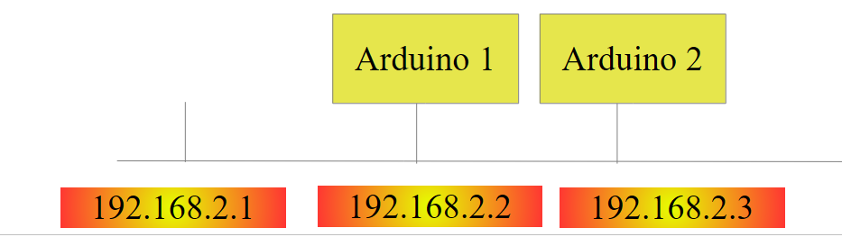 |
Gibt es nur einen Arduino, kann dieser über ein einfaches PC-Kabel mit dem Host RJ 45 verbunden werden. Gibt es mehr als einen, werden der PC-Host und die Arduinos über einen Mini-Hub in dasselbe Netzwerk eingebunden.
Der Host PC und die Arduinos werden in das private Netzwerk 192.168.2.x eingebunden.
- Die Adresse IP der Arduinos wird durch den Quellcode festgelegt. Wir werden sehen, wie das funktioniert;
- Die Adresse IP des Host-Computers kann wie folgt festgelegt werden:
- Wählen Sie die Option [Panneau de configuration\Réseau et Internet\Centre Réseau et partage]:
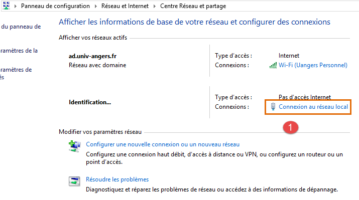 |
- in [1], dem Link [Connexion au réseau local] folgen
 |  |
- in [2], die Verbindungseigenschaften anzeigen;
- in [4] die Eigenschaften der Verbindung anzeigen;
 |
- in [5] die Adresse IP [192.168.2.1] dem Host-Computer zuweisen;
- in [6], die Subnetzmaske [255.255.255.0] dem Netzwerk zuweisen;
- das Ganze in [7] bestätigen.
6.5. Test einer Netzwerkanwendung
Laden Sie mit dem IDE das Beispiel [Exemples / Ethernet / WebServer]:
/*
Web Server
A simple web server that shows the value of the analog input pins.
using an Arduino Wiznet Ethernet shield.
Circuit:
* Ethernet shield attached to pins 10, 11, 12, 13
* Analog inputs attached to pins A0 through A5 (optional)
created 18 Dec 2009
by David A. Mellis
modified 9 Apr 2012
by Tom Igoe
*/
#include <SPI.h>
#include <Ethernet.h>
// Geben Sie unten eine MAC-Adresse und eine IP-Adresse für Ihren Controller ein.
// Die IP-Adresse hängt von Ihrem lokalen Netzwerk ab:
byte mac[] = {
0xDE, 0xAD, 0xBE, 0xEF, 0xFE, 0xED };
IPAddress ip(192,168,1, 177);
// Initialisieren Sie die Ethernet-Server-Bibliothek
// mit der Adresse IP und dem Port, den Sie verwenden möchten
// (Port 80 ist die Standardeinstellung für HTTP):
EthernetServer server(80);
void setup() {
// Öffnen Sie die serielle Kommunikation und warten Sie, bis der Port geöffnet ist:
Serial.begin(9600);
while (!Serial) {
; // Warten, bis der serielle Port verbunden ist. Nur für Leonardo erforderlich
}
// Ethernet-Verbindung und Server starten:
Ethernet.begin(mac, ip);
server.begin();
Serial.print("server is at ");
Serial.println(Ethernet.localIP());
}
void loop() {
// Auf eingehende Clients warten
EthernetClient client = server.available();
if (client) {
Serial.println("new client");
// Eine HTTP-Anfrage endet mit einer Leerzeile
boolean currentLineIsBlank = true;
while (client.connected()) {
if (client.available()) {
char c = client.read();
Serial.write(c);
// Wenn Sie das Ende der Zeile erreicht haben (ein Zeilenumbruch
// Zeichen) und die Zeile leer ist, ist die HTTP-Anfrage beendet,
// sodass Sie eine Antwort senden können
if (c == '\n' && currentLineIsBlank) {
// Senden Sie einen Standard-HTTP-Antwort-Header
client.println("HTTP/1.1 200 OK");
client.println("Content-Type: text/html");
client.println("Connection: close");
client.println();
client.println("<!DOCTYPE HTML>");
client.println("<html>");
// füge ein Meta-Refresh-Tag hinzu, damit der Browser alle 5 Sekunden erneut abruft:
client.println("<meta http-equiv=\"refresh\" content=\"5\">");
// den Wert jedes analogen Eingangs-Pins ausgeben
for (int analogChannel = 0; analogChannel < 6; analogChannel++) {
int sensorReading = analogRead(analogChannel);
client.print("analog input ");
client.print(analogChannel);
client.print(" is ");
client.print(sensorReading);
client.println("<br />");
}
client.println("</html>");
break;
}
if (c == '\n') {
// Sie beginnen eine neue Zeile
currentLineIsBlank = true;
}
else if (c != '\r') {
// Sie haben ein Zeichen in der aktuellen Zeile empfangen
currentLineIsBlank = false;
}
}
}
// dem Webbrowser Zeit geben, die Daten zu empfangen
delay(1);
// Verbindung schließen:
client.stop();
Serial.println("client disconnected");
}
}
Diese Anwendung erstellt einen Webserver auf Port 80 (Zeile 30) unter der Adresse IP aus Zeile 25. Die Adresse MAC in Zeile 23 ist die auf der Netzwerkkarte des Arduino angegebene Adresse MAC.
Die Funktion [setup] initialisiert den Webserver:
- Zeile 34: Initialisiert den seriellen Port, über den die Anwendung Protokolle ausgibt. Diese werden wir verfolgen;
- Zeile 41: Der Knoten TCP-IP (IP, Port) wird initialisiert;
- Zeile 42: Der Server aus Zeile 30 wird auf diesem Netzwerkknoten gestartet;
- Zeilen 43–44: Die Adresse IP des Webservers wird protokolliert;
Die Funktion [loop] implementiert den Webserver:
- Zeile 50: Wenn sich ein Client mit dem Webserver verbindet, gibt [server].available diesen Client zurück, andernfalls null;
- Zeile 51: wenn der Kunde nicht null ist;
- Zeile 55: solange der Client verbunden ist;
- Zeile 56: [client].available ist wahr, wenn der Client Zeichen gesendet hat. Diese werden in einem Puffer gespeichert. [client].available ist wahr, solange dieser Puffer nicht leer ist;
- Zeile 57: Ein vom Client gesendetes Zeichen wird gelesen;
- Zeile 58: Dieses Zeichen wird in der Log-Konsole ausgegeben;
- Zeile 62: Im Protokoll HTTP tauschen Client und Server Textzeilen aus.
- Der Client sendet eine Anfrage HTTP an den Webserver, indem er ihm eine Reihe von Textzeilen sendet, die mit einer leeren Zeile enden,
- der Server antwortet daraufhin dem Client, indem er ihm eine Antwort sendet und die Verbindung schließt;
Zeile 62: Der Server führt keine Verarbeitung der HTTP-Header durch, die er vom Client erhält. Er wartet lediglich auf die leere Zeile: eine Zeile, die ausschließlich das Zeichen \n enthält;
- Zeilen 64–67: Der Server sendet dem Client die Standardtextzeilen des Protokolls HTTP. Diese enden mit einer leeren Zeile (Zeile 67);
- Ab Zeile 68 sendet der Server ein Dokument an seinen Client. Dieses Dokument wird vom Server dynamisch generiert und hat das Format HTML (Zeilen 68–69);
- Zeile 71: Eine spezielle Zeile im Format HTML, die den Client-Browser anweist, die Seite alle 5 Sekunden zu aktualisieren. Dadurch fordert der Browser alle 5 Sekunden dieselbe Seite an;
- Zeilen 73–80: Der Server sendet die Werte der 6 analogen Eingänge des Arduino an den Client-Browser;
- Zeile 81: Das Dokument HTML wird geschlossen;
- Zeile 82: Die Schleife while aus Zeile 55 wird verlassen;
- Zeile 97: Die Verbindung zum Client wird geschlossen;
- Zeile 98: Das Ereignis wird in der Log-Konsole protokolliert;
- Zeile 100: Es wird zum Anfang der Funktion „loop“ zurückgesprungen: Der Server wartet nun wieder auf Anfragen von Clients. Wir haben gesagt, dass der Browser des Clients alle 5 Sekunden dieselbe Seite erneut anfordern wird. Der Server wird bereit sein, ihm erneut zu antworten.
Ändern Sie den Code in Zeile 25 so, dass er die Adresse IP Ihres Arduino enthält, zum Beispiel:
Laden Sie das Programm auf den Arduino hoch. Starten Sie die Log-Konsole (Strg-M) (M groß):
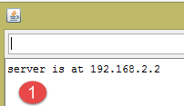 |  |
- in der Log-Konsole erscheint nun „[1]“. Der Server wurde gestartet;
- unter [2] ruft man mit einem Browser die Adresse IP des Arduino auf. Hier wird [192.168.2.2] standardmäßig als [http://198.162.2.2:80] übersetzt;
- in [3] die vom Webserver gesendeten Informationen. Wenn man den Quellcode der Browser-Seite anzeigt, erhält man:
Hier erkennt man die vom Server gesendeten Textzeilen. Auf der Arduino-Seite zeigt die Log-Konsole an, was der Client ihr sendet:
- Zeilen 2–9: Standard-Header HTTP;
- Zeile 10: die leere Zeile, die sie abschließt.
Sehen Sie sich dieses Beispiel genau an. Es wird Ihnen helfen, die Programmierung des im TP verwendeten Arduino zu verstehen.
6.6. Die Bibliothek aJson
Im zu schreibenden TP tauschen die Arduinos Textzeilen im jSON-Format mit ihren Clients aus. Standardmäßig enthält der Arduino IDE keine Bibliothek zur Verwaltung des jSON. Wir werden die Bibliothek aJson installieren, die unter URL [https://github.com/interactive-matter/aJson] verfügbar ist.
 |  |
- in [1]: Laden Sie die ZIP-Version aus dem GitHub-Repository herunter;
- entpacken Sie den Ordner und kopieren Sie den Ordner „[aJson-master] [2]“ in den Ordner „[<arduino>/libraries] [3]“, wobei <arduino> der Installationsordner desIDE Arduino;
 |  |  |
- in [4], benennen Sie diesen Ordner in [aJson] um;
- in [5], dessen Inhalt.
Starten Sie nun das Arduino-Programm „IDE“:
 |
Vergewissern Sie sich, dass in den Beispielen nun Beispiele für die Bibliothek aJson vorhanden sind. Führen Sie diese Beispiele aus und sehen Sie sie sich an.
6.7. Das Android-Tablet
Die Beispiele wurden mit dem Samsung Galaxy Tab 2 getestet.
Um die Beispiele auf einem Tablet zu testen, müssen Sie zunächst den Treiber des Tablets auf Ihrem Entwicklungsrechner installieren. Den Treiber für das Samsung Galaxy Tab 2 finden Sie unter URL [http://www.samsung.com/fr/support/usefulsoftware/KIES/]:
 |
Um die Beispiele zu testen, müssen Sie das Tablet mit einem Netzwerk (wahrscheinlich WLAN) verbinden und dessen Adresse IP in diesem Netzwerk kennen. So gehen Sie vor (Samsung Galaxy Tab 2):
- Schalten Sie Ihr Tablet ein;
- suchen Sie unter den auf dem Tablet verfügbaren Apps (oben rechts) nach der App namens [paramètres] mit einem Zahnrad-Symbol;
- Aktivieren Sie im Bereich auf der linken Seite das WLAN;
- Wählen Sie im rechten Bereich ein WLAN-Netzwerk aus;
- Sobald die Verbindung zum Netzwerk hergestellt ist, tippen Sie kurz auf das ausgewählte Netzwerk. Die Adresse IP des Tablets wird angezeigt. Notieren Sie sich diese. Sie werden sie benötigen;
Immer noch in der App [Paramètres],
- wählen Sie links die Option „[Options de développement]“ (ganz unten in der Liste) aus;
- Vergewissern Sie sich, dass rechts die Option „[Débogage USB]“ angekreuzt ist.
Um zum Menü zurückzukehren, tippen Sie in der Statusleiste unten auf das mittlere Symbol, das Haus-Symbol. Ebenfalls in der Statusleiste unten
- das Symbol ganz links dient zum Zurückblättern: Sie kehren zur vorherigen Ansicht zurück;
- das Symbol ganz rechts ist das Symbol für die Aufgabenverwaltung. Sie können alle Aufgaben anzeigen und verwalten, die zu einem bestimmten Zeitpunkt von Ihrem Tablet ausgeführt wurden;
Verbinden Sie Ihr Tablet über das mitgelieferte Kabel USB mit Ihrem PC.
Stecken Sie den WLAN-Stick in einen der Anschlüsse USB des PC und verbinden Sie sich dann mit demselben WLAN-Netzwerk wie das Tablet. Geben Sie anschließend in einem DOS-Fenster den Befehl [ipconfig] ein:
Ihr PC verfügt über zwei Netzwerkkarten und somit über zwei IP-Adressen:
- die in Zeile 9, die dem PC im kabelgebundenen Netzwerk entspricht;
- die in Zeile 17, die dem PC im WLAN-Netzwerk entspricht;
Notieren Sie sich diese beiden Angaben. Sie werden sie benötigen. Sie befinden sich nun in der folgenden Konfiguration:
 |
Das Tablet muss eine Verbindung zu Ihrem PC herstellen. Dieser ist normalerweise durch eine Firewall geschützt, die verhindert, dass externe Elemente eine Verbindung zum PC herstellen. Sie müssen daher die Firewall deaktivieren. Tun Sie dies mit der Option [Panneau de configuration\Système et sécurité\Pare-feu Windows]. Manchmal muss zusätzlich die vom Antivirenprogramm eingerichtete Firewall deaktiviert werden. Dies hängt von Ihrem Antivirenprogramm ab.
Überprüfen Sie nun auf Ihrem PC die Netzwerkverbindung zum Tablet mit dem Befehl [ping 192.168.1.y], wobei [192.168.1.y] die IP-Adresse des Tablets ist. Sie sollten eine Ausgabe erhalten, die in etwa so aussieht:
Die Zeilen 4–7 zeigen an, dass das Tablet mit der Adresse IP auf den Befehl [ping] geantwortet hat.
6.8. Installation eines JDK
Unter URL und [http://www.oracle.com/technetwork/java/javase/downloads/index.html] (Juni 2016) findet sich die aktuellste Version JDK. Im Folgenden wird der Installationsordner des JDK als <jdk-install> bezeichnet.
 |
6.9. Installation des Genymotion-Emulator-Managers
Das Unternehmen [Genymotion] bietet einen leistungsstarken Android-Emulator an. Dieser ist in den Versionen URL und [https://cloud.genymotion.com/page/launchpad/download/] (Juni 2016) verfügbar.
Sie müssen sich registrieren, um eine Version für den privaten Gebrauch zu erhalten. Laden Sie das Produkt [Genymotion] zusammen mit der virtuellen Maschine VirtualBox herunter:

Im Folgenden bezeichnen wir den Installationsordner von [Genymotion] als <genymotion-install>. Starten Sie [Genymotion]. Laden Sie anschließend ein Image für ein Tablet herunter:
 |
- in [1], fügen Sie das in [2] beschriebene virtuelle Terminal hinzu;
 |
- in [3], konfigurieren Sie das Terminal;
 |  |
- in [4-5], passen Sie das Terminal an Ihre Umgebung an;
- in [6], starten Sie das virtuelle Terminal;
Wenn alles geklappt hat, erscheint das Fenster des Android-Emulators:
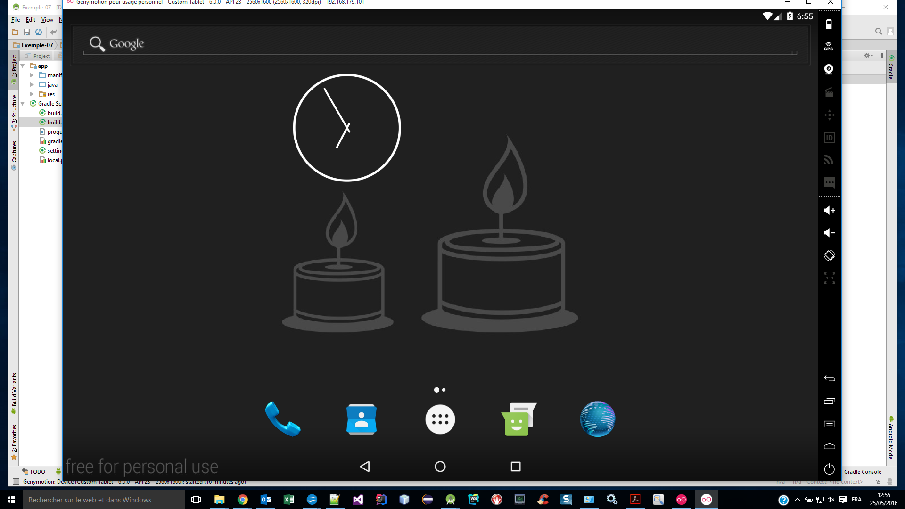
Manchmal wird der Android-Emulator nicht gestartet. Auf einem Windows-Rechner können Sie die folgenden beiden Punkte überprüfen:
- Überprüfen Sie, ob die virtuelle Maschine [Hyper-V] nicht bereits installiert ist. Deinstallieren Sie sie gegebenenfalls: [1-2];
 |  |
- Anschließend im Konfigurationsassistenten [Centre Réseau et partage] [1]:
 |
 |  |
- Wählen Sie in [3] die Karte(n) aus, die der Virtual-Box-Virtual-Machine zugeordnet sind;
 |
- Stellen Sie sicher, dass unter [6] der Treiber für VirtualBox aktiviert ist. Wiederholen Sie diesen Vorgang für alle Karten, die der VirtualBox-Maschine zugeordnet sind;
6.10. Installation von Maven
Maven ist ein Tool zur Verwaltung der Abhängigkeiten eines Java-Projekts und vieles mehr. Es ist unter URL [http://maven.apache.org/download.cgi] verfügbar.
 |
Laden Sie das Archiv herunter und entpacken Sie es. Wir bezeichnen den Installationsordner von Maven als <maven-install>.
 |
- In [1] konfiguriert die Datei [conf / settings.xml] Maven;
Darin finden sich die folgenden Zeilen:
<!-- localRepository
| The path to the local repository maven will use to store artifacts.
|
| Default: ${user.home}/.m2/repository
<localRepository>/path/to/local/repo</localRepository>
-->
Der Standardwert in Zeile 4 kann, wenn Ihre {user.home} wie bei mir ein Leerzeichen im Pfad enthält (z. B. [C:\Users\Serge Tahé]), bei bestimmten Programmen zu Problemen führen. In diesem Fall schreiben wir etwa Folgendes:
<!-- localRepository
| The path to the local repository maven will use to store artifacts.
|
| Default: ${user.home}/.m2/repository
<localRepository>/path/to/local/repo</localRepository>
-->
<localRepository>D:\Programs\devjava\maven\.m2\repository</localRepository>
und vermeidet in Zeile 7 einen Pfad, der Leerzeichen enthält.
6.11. Installation von Android Studio {IDE}
Die Android Studio Community Edition ist im IDE URL [https://developer.android.com/studio/index.html] (Juni 2016) verfügbar:
 |
Installieren Sie die IDE und starten Sie sie anschließend. Installieren Sie gemäß der Anleitung [1-8] die Komponenten des SDK Managers, die in den folgenden Beispielen verwendet werden. Wenn Sie sich entscheiden, neuere Komponenten zu installieren, erhalten Sie wahrscheinlich Warnmeldungen von Android Studio, dass die Konfiguration der Beispiele auf Komponenten von SDK verweist, die in Ihrer Umgebung nicht vorhanden sind. In diesem Fall können Sie den Empfehlungen von IDE folgen.
 |
 |
 |
- in [9]: Fordern Sie die Details zu den Paketen an:
 |
- In [11] oben wurden in den Beispielen die SDK Build-Tools 23.0.3 verwendet;
- im folgenden [9-12] geben Sie den Ordner an, in dem Sie den Emulator-Manager [Genymotion] installiert haben;
 |  |
- In [13-18] wird die Standardart der Projekte konfiguriert;
 |  |
- In [17] ist der vorgeschlagene Standardwert normalerweise korrekt;
- in [18] stellen Sie sicher, dass Sie über JDK 1.8 verfügen;
Im folgenden Beispiel, bei [19-26], wird die Rechtschreibprüfung deaktiviert, die standardmäßig für die englische Sprache eingestellt ist;
 |  |
 |
- Wählen Sie unten in [27-28] die gewünschte Art von Tastaturkürzeln aus. Sie können die Standard-Tastaturkürzel von IntelliJ beibehalten oder die eines anderen IDE wählen, an die Sie eher gewöhnt sind;
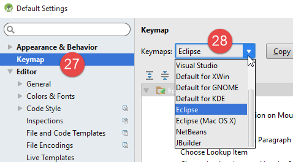 |
- unten, unter [29-30], lassen Sie die Zeilennummern des Codes anzeigen;
 |
- unten, in [31-34], geben Sie an, wie Sie das erste Projekt beim Start von IDE und anschließend die folgenden Projekte verwalten möchten;
 |
Bei Android 2.1 (Mai 2016) verursacht die Technologie [Instant Run] manchmal Probleme. In diesem Dokument haben wir sie deaktiviert:
 |  |
- In [3-4] wurde alles deaktiviert;
6.12. Verwendung der Beispiele
Die Android Studio-Projekte zu den Beispielen sind unter ICI| verfügbar. Laden Sie sie herunter.
 |
Die Beispiele wurden mit den zuvor definierten Komponenten erstellt:
- JDK 1.8;
- Android SDK Platform 23 zur Ausführung;
Die folgenden Werkzeuge von SDK:
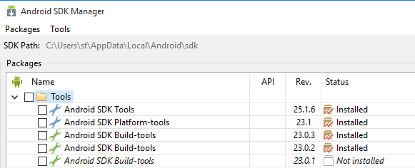 |
Wenn Ihre Umgebung nicht mit der oben beschriebenen übereinstimmt, müssen Sie die Projektkonfiguration anpassen. Dies kann recht mühsam sein. Zunächst ist es wahrscheinlich einfacher, eine Arbeitsumgebung einzurichten, die der oben beschriebenen ähnelt.
Starten Sie Android Studio und öffnen Sie beispielsweise das Projekt [exemple-07]:
 |  |
 |
- In [1-3] öffnet man das Projekt [Exemple-07];
- bei [4] wird die Datei [local.properties] überprüft;
 |  |
- Geben Sie in Zeile 11 oben den Speicherort des Android SDK Managers <sdk-manager-install> für SDK ein. Diesen finden Sie, indem Sie die Anleitung für [1-4] befolgen:
 |
Alle Beispiele in diesem Dokument sind Gradle-Projekte, die über eine [build.gradle]-Datei konfiguriert sind:
 |
Die Datei [build.gradle] aus Beispiel 07 lautet wie folgt:
buildscript {
repositories {
mavenCentral()
mavenLocal()
}
dependencies {
// durch die aktuelle Version des Android-Plugins ersetzen
classpath 'com.android.tools.build:gradle:2.1.0'
// Seit Android-Gradle-Plugin 0.11 muss android-apt >= 1.3 verwendet werden
classpath 'com.neenbedankt.gradle.plugins:android-apt:1.8'
}
}
apply plugin: 'com.android.application'
apply plugin: 'android-apt'
def AAVersion = '4.0.0'
dependencies {
apt "org.androidannotations:androidannotations:$AAVersion"
compile "org.androidannotations:androidannotations-api:$AAVersion"
compile 'com.android.support:appcompat-v7:23.4.0'
compile 'com.android.support:design:23.4.0'
compile fileTree(dir: 'libs', include: ['*.jar'])
}
repositories {
jcenter()
}
apt {
arguments {
androidManifestFile variant.outputs[0].processResources.manifestFile
resourcePackageName android.defaultConfig.applicationId
}
}
android {
compileSdkVersion 23
buildToolsVersion "23.0.3"
defaultConfig {
applicationId "android.exemples"
minSdkVersion 15
targetSdkVersion 23
versionCode 1
versionName "1.0"
}
buildTypes {
release {
minifyEnabled false
proguardFiles getDefaultProguardFile('proguard-android.txt'), 'proguard-rules.pro'
}
}
compileOptions {
sourceCompatibility JavaVersion.VERSION_1_7
targetCompatibility JavaVersion.VERSION_1_7
}
}
Je nach der von Ihnen erstellten Android-Umgebung (SDK und Tools) müssen Sie möglicherweise die Versionen in den Zeilen 8, 21, 22, 38 und 39 ändern. Android Studio unterstützt Sie dabei mit Vorschlägen. Am einfachsten ist es, diesen Vorschlägen zu folgen.
Auf die Elemente der Datei [build.gradle] kann auch auf andere Weise zugegriffen werden:
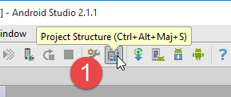 |  |
- Die verschiedenen Registerkarten von [3] enthalten die verschiedenen Werte der Datei [build.gradle]. Man kann diese Datei also auf diese Weise erstellen, wodurch sich die Syntaxprobleme der Datei [build.gradle] umgehen lassen;
Ein weiterer zu überprüfender Punkt ist die Datei JDK, die von den Dateien IDE und [5] verwendet wird:
 |
Überprüfen Sie in der Datei „[6]“ die Datei „JDK“.
Alle Beispiele sind Gradle-Projekte mit Abhängigkeiten, die heruntergeladen werden müssen. Dazu kann wie folgt vorgegangen werden:
 |   |
- In [5] wird das Projekt kompiliert;
Sobald das Projekt fehlerfrei ist, muss eine Ausführungskonfiguration [1-8] erstellt werden:
 | 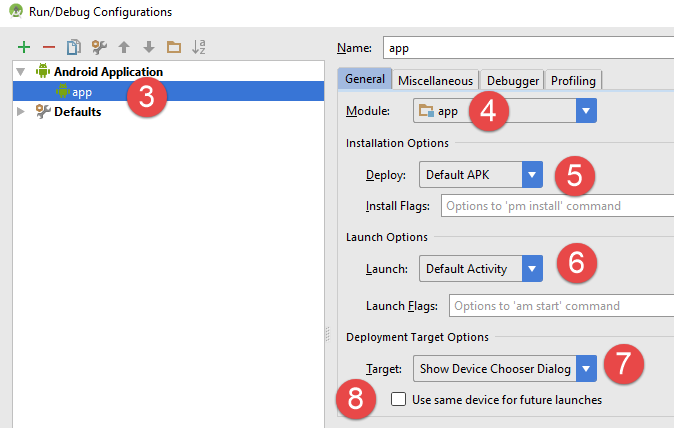 |
- In [8] kann angegeben werden, dass immer dasselbe Terminal für die Ausführung verwendet werden soll. In der Regel ist diese Option aktiviert, um zu vermeiden, dass bei jeder neuen Ausführung das zu verwendende Terminal neu angegeben werden muss. Hier lassen wir sie deaktiviert, da wir gerade verschiedene Android-Geräte testen wollen;
- Sobald die Ausführungskonfiguration erstellt ist, starten wir den Android-Emulator-Manager [1-3];
 | 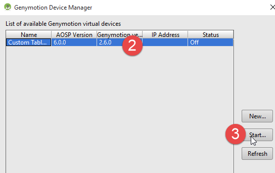 |
- Wenn der Android-Emulator nicht startet, überprüfen Sie die in Abschnitt 6.11 genannten Punkte;
Um die Anwendung auf dem Emulator zu starten, gehen Sie wie folgt vor [1-4]:
 |  |
- In [2] sollte nun der zuvor gestartete Emulator angezeigt werden;
 |
- in [5] die vom Emulator angezeigte Ansicht;
Schließen Sie nun ein Android-Tablet an einen Anschluss USB des PC an und starten Sie die Anwendung darauf:
 |
- Wählen Sie in [6] das Android-Tablet aus und testen Sie die App.
In [7] gibt es vordefinierte virtuelle Endgeräte. Wir werden lernen, wie man weitere hinzufügt und welche entfernt.
 |
 |
Auf dem obigen Screenshot arbeiten alle vorgeschlagenen Endgeräte mit API 22. Wir löschen sie alle, da wir mit API 23 arbeiten möchten. Wir befolgen die Vorgehensweise [2-3] zum Löschen der Endgeräte.

 |
- In [4-5] fügen wir ein Tablet hinzu;
 |
- in [6] wählen Sie ein API aus. Oben wählen wir das API 23 für Windows 64-Bit aus;
 |
- in [7], die Zusammenfassung der vorgenommenen Konfiguration;
- mit [8] kann eine erweiterte Konfiguration des virtuellen Terminals vorgenommen werden;
 |
Sobald der Assistent abgeschlossen ist, wird das erstellte Terminal in [9] angezeigt.
Wenn man anschließend die Ausführung von [Exemple-07] erneut startet, erscheint nun das folgende Fenster:
 |
- In [1] wird das neue virtuelle Terminal angezeigt;
- in [2] können Sie neue Terminals erstellen;
Probieren Sie verschiedene Optionen aus, um das für Ihren Rechner am besten geeignete virtuelle Terminal zu ermitteln. In diesem Dokument wurden die Beispiele hauptsächlich mit dem Genymotion-Emulator getestet.
Unabhängig vom gewählten virtuellen Terminal werden Protokolle im Fenster mit der Bezeichnung [Logcat] [1-2] angezeigt:
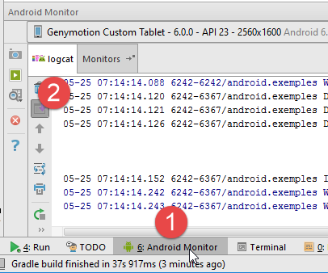
Sehen Sie sich diese Protokolle regelmäßig an. Dort werden die Ausnahmen gemeldet, die zum Absturz Ihres Programms geführt haben.
Sie können Ihr Programm auch mit den üblichen Debugging-Tools debuggen:
 |  |
- In [2] setzen Sie einen Haltepunkt, indem Sie einmal auf die Spalte links neben der Zielzeile klicken. Ein weiterer Klick hebt den Haltepunkt wieder auf;
 |
- In [3] führen Sie am Haltepunkt Folgendes aus:
- [F6], um die Zeile auszuführen, ohne in die Methoden einzusteigen, falls die Zeile Methodenaufrufe enthält,
- [F5], um die Zeile auszuführen und dabei die Methoden aufzurufen, falls die Zeile Methodenaufrufe enthält,
- [F8], um bis zum nächsten Haltepunkt fortzufahren;
- [Ctrl-F2], um das Debuggen zu beenden;
6.13. Installation des Chrome-Plugins [Advanced Rest Client]
In diesem Dokument wird der Chrome-Browser von Google (http://www.google.fr/intl/fr/chrome/browser/) verwendet. Dazu wird die Erweiterung [Advanced Rest Client] hinzugefügt. Gehen Sie dazu wie folgt vor:
- Rufen Sie die Website von [Google Web store] (https://chrome.google.com/webstore) mit dem Chrome-Browser auf;
- suchen Sie nach der Anwendung [Advanced Rest Client]:
 |
- Die Anwendung steht dann zum Download bereit:
 |
- Um sie zu erhalten, müssen Sie ein Google-Konto erstellen. [Google Web Store] fordert anschließend eine Bestätigung an: [1]:
 |  |
- In [2] ist die hinzugefügte Erweiterung in der Option [Applications] [3] verfügbar. Diese Option wird auf jedem neuen Tab angezeigt, den Sie im Browser erstellen (CTRL-T).
6.14. Verwaltung des Frame s jSON in Java
Für den Entwickler transparent nutzt das Framework [Spring MVC] die Bibliothek jSON [Jackson]. Um zu veranschaulichen, was jSON (JavaScript-Objektnotation) ist, stellen wir hier ein Programm vor, das Objekte in jSON serialisiert und umgekehrt die erzeugten jSON-Zeichenketten deserialisiert, um die ursprünglichen Objekte wiederherzustellen.
Mit der Bibliothek „Jackson“ lässt sich Folgendes erstellen:
- die Zeichenkette jSON eines Objekts: new ObjectMapper().writeValueAsString(object);
- ein Objekt aus einer Zeichenkette jSON: new ObjectMapper().readValue(jsonString, Object.class).
Beide Methoden können ein IOException auslösen. Hier ein Beispiel.
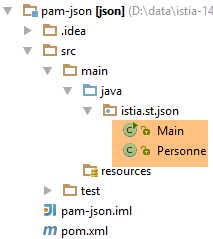 |
Das oben genannte Projekt ist ein Maven-Projekt mit der folgenden Datei [pom.xml]:
<?xml version="1.0" encoding="UTF-8"?>
<project xmlns="http://maven.apache.org/POM/4.0.0"
xmlns:xsi="http://www.w3.org/2001/XMLSchema-instance"
xsi:schemaLocation="http://maven.apache.org/POM/4.0.0 http://maven.apache.org/xsd/maven-4.0.0.xsd">
<modelVersion>4.0.0</modelVersion>
<groupId>istia.st.pam</groupId>
<artifactId>json</artifactId>
<version>1.0-SNAPSHOT</version>
<dependencies>
<dependency>
<groupId>com.fasterxml.jackson.core</groupId>
<artifactId>jackson-databind</artifactId>
<version>2.3.3</version>
</dependency>
</dependencies>
</project>
- Zeilen 12–16: die Abhängigkeit, die die Bibliothek „Jackson“ einbindet;
Die Klasse [Personne] sieht wie folgt aus:
package istia.st.json;
public class Personne {
// Daten
private String nom;
private String prenom;
private int age;
// Konstruktoren
public Personne() {
}
public Personne(String nom, String prénom, int âge) {
this.nom = nom;
this.prenom = prénom;
this.age = âge;
}
// Signatur
public String toString() {
return String.format("Personne[%s, %s, %d]", nom, prenom, age);
}
// Getter und Setter
...
}
Die Klasse [Main] sieht wie folgt aus:
package istia.st.json;
import com.fasterxml.jackson.databind.ObjectMapper;
import java.io.IOException;
import java.util.HashMap;
import java.util.Map;
public class Main {
// das Tool zur Serialisierung/Deserialisierung
static ObjectMapper mapper = new ObjectMapper();
public static void main(String[] args) throws IOException {
// Anlegen einer Person
Personne paul = new Personne("Denis", "Paul", 40);
// JSON-Anzeige
String json = mapper.writeValueAsString(paul);
System.out.println("Json=" + json);
// Instanziierung einer Person aus dem JSON
Personne p = mapper.readValue(json, Personne.class);
// Anzeige einer Person
System.out.println("Personne=" + p);
// ein Array
Personne virginie = new Personne("Radot", "Virginie", 20);
Personne[] personnes = new Personne[]{paul, virginie};
// JSON-Anzeige
json = mapper.writeValueAsString(personnes);
System.out.println("Json personnes=" + json);
// Wörterbuch
Map<String, Personne> hpersonnes = new HashMap<String, Personne>();
hpersonnes.put("1", paul);
hpersonnes.put("2", virginie);
// JSON anzeigen
json = mapper.writeValueAsString(hpersonnes);
System.out.println("Json hpersonnes=" + json);
}
}
Die Ausführung dieser Klasse erzeugt folgende Bildschirmausgabe:
Aus dem Beispiel ist Folgendes zu entnehmen:
- das für die Transformationen jSON erforderliche Objekt [ObjectMapper] / Objekt: Zeile 11;
- die Transformation [Personne] --> jSON: Zeile 17;
- die Transformation jSON --> [Personne]: Zeile 20;
- die von beiden Methoden ausgelöste Ausnahme [IOException]: Zeile 13.
6.15. Installation von [WampServer]
[WampServer] ist ein Softwarepaket zur Entwicklung mit PHP / MySQL / Apache auf einem Windows-Rechner. Wir werden es ausschließlich für SGBD und MySQL verwenden.
 |  |
- auf der Website von [WampServer] [1] die passende Version auswählen [2],
- Die heruntergeladene ausführbare Datei ist ein Installationsprogramm. Während der Installation werden verschiedene Informationen abgefragt. Diese betreffen MySQL nicht. Sie können daher ignoriert werden. Am Ende der Installation wird das Fenster [3] angezeigt. Starten Sie [WampServer],
 |  |
- in [4]. Das Symbol von [WampServer] wird in der Taskleiste unten rechts auf dem Bildschirm installiert ([4]).
- Wenn man darauf klickt, wird das Menü [5] angezeigt. Es ermöglicht die Verwaltung des Apache-Servers und von SGBD sowie MySQL. Um diesen zu verwalten, verwendet man die Option [PhpPmyAdmin],
- daraufhin erscheint das untenstehende Fenster,

Wir gehen hier nicht näher auf die Verwendung von [PhpMyAdmin] ein. Die Verwendung wird im Dokument erläutert.